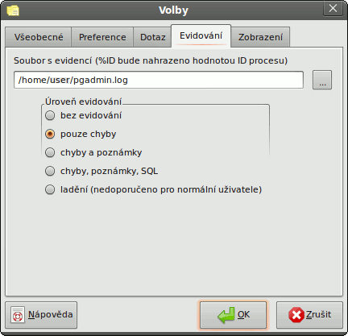

Volby pgAdmin - Karta 4 (Evidování)

- Soubor s evidencí - Určuje soubor, ve kterém bude pgAdmin uchovávat evidovaná data. Pokud do názvu zadáte %ID, nahradí se ID procesu.
Díky tomu můžete provádět evidenci pro více verzí pgAdmin naráz.
- bez evidování - Nebude se provádět žádná evidence.
- pouze chyby - pgAdmin bude evidovat chyby, ale nic jiného.
- chyby a upozornění - pgAdmin bude evidovat chyby a zprávy s upozorněním z PostgreSQL, ale nic dalšího.
- chyby, poznámky, SQL - Do souboru s evidencí se budou evidovat chybové zprávy, zprávy s upozorněním z PostgreSQL a dotazy SQL.
- ladění - Do souboru s evidencí se budou evidovat chybové zprávy, zprávy s upozorněním z PostgreSQL, dotazy SQL a ladící zprávy. Tato volba
může pgAdmin zpomalit a proto ji nedoporučujeme používat při normálním provozu.